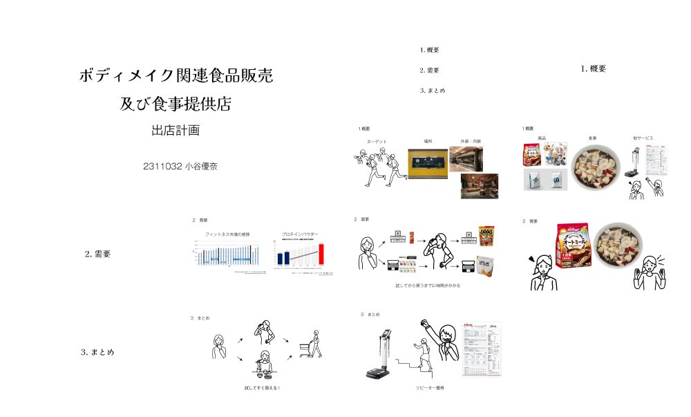
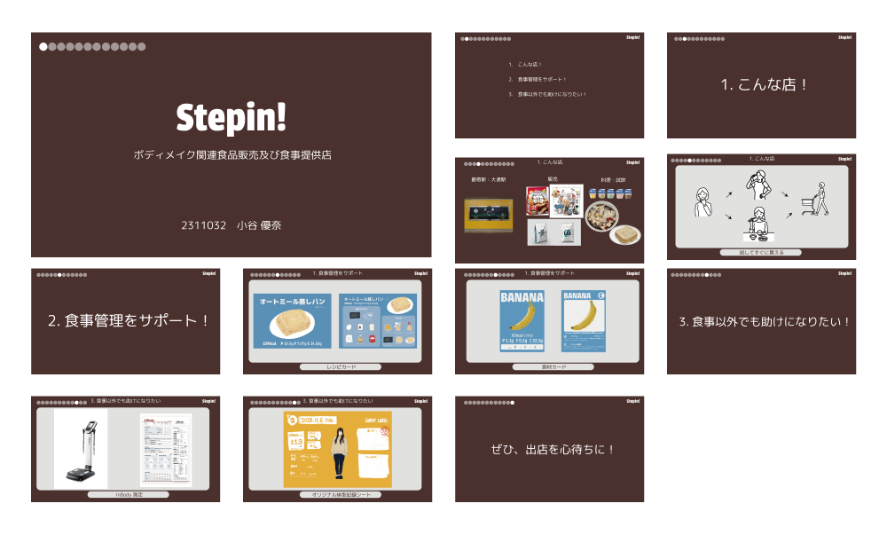
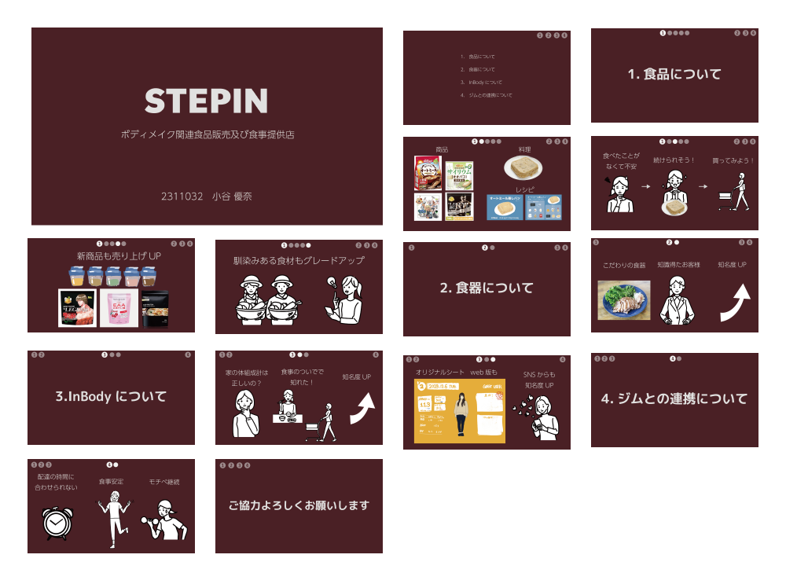
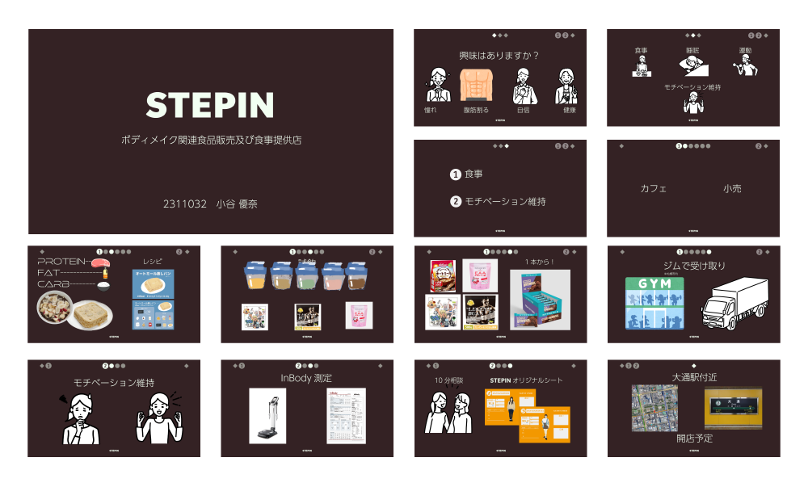

プレゼン1 社内プレゼン
プレゼン2 顧客向けプレゼン
プレゼン3 スポンサー向けプレゼン
プレゼン4 最終プレゼン

現代社会を生き抜くために、情報を効果的に伝えるために、クリエイティブ、コミュニケーション戦略、クリティカル・シンキングの力がますます求められている。
特に，情報を伝達する目的や相手に合った情報の収集や編集方法を学ぶとともに、プレゼンテーション用のソフトウエアを活用し、多様な表現手段と説得力あるプレゼンテーション技術を習得する。
①目的や相手に合わせた最も効果的な表現手法および読み解く方法について理解する。
②適切なプレゼンテーション方法やソフトウエアを自ら選定し実践することができる。
スライドの作成にはイラストレーターを使用した。目的や相手に合わせたプレゼンができたと思う。常に見てくれる人のことを考え、退屈しなくて辛くないプレゼンにすることを心がけて準備をした。プレゼンのスライドも回を重ねるごとに洗練することができた。特に、今が何ページ目でどのくらい残っているのかを見て分かるようにする工夫がよくできたと思う。最初のプレゼンから文字数を減らし、図を多くするという方法を取れていたのがよかったと思う。話すときは、私は滑舌がいい方で声も通るので雰囲気で押し通せてしまっていたが、事前に用意をする時間をもっと取るべきだったと反省している。今後のプレゼンにもこのページ表記は活用できるのでこれを使いつつ、スライドは余白を意識し、プレゼンは資料を作るだけでなく話すことが最も重要であるということを再認識し準備を十分時間をかけて行うようにしたい。